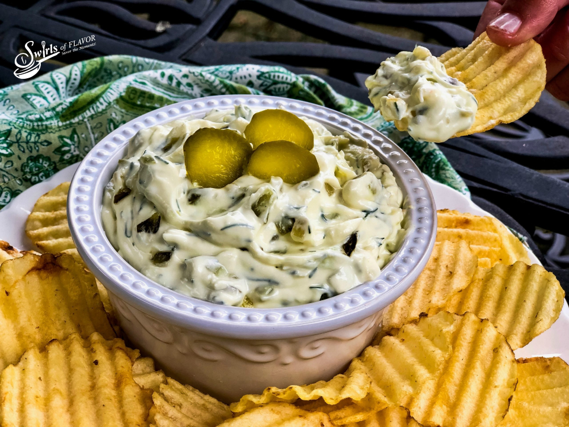

Dill Pickle Dip

This was served at our Easter lunch and was devoured. Serve with chips or crackers.
Ingridients
- 1 (8 ounce) package cream cheese, at room temperature
- 1 cup chopped dill pickles, or more to taste
- ¼ cup finely chopped sweet onion
- 2 tablespoons pickle juice, or more to taste
- 1 teaspoon dried dill weed
- ½ teaspoon kosher salt
- 1 pinch freshly ground black pepper, or to taste
Directions
Step 1
Stir cream cheese in a bowl with a wooden spoon until smooth. Stir in dill pickles, onion, pickle juice, dill weed, salt, and pepper until evenly distributed. Refrigerate before serving, at least 1 hour.